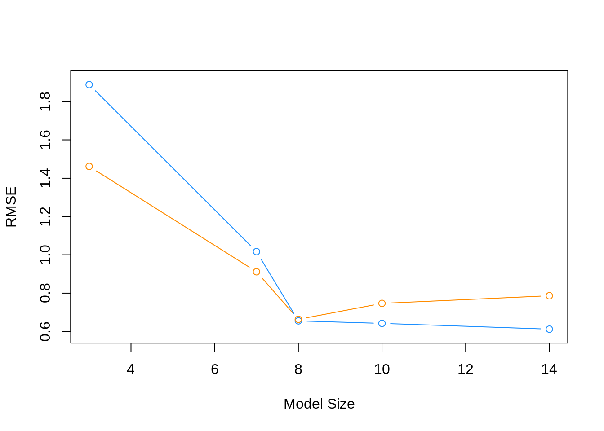

Chapter 6 Linear Models
TODO: Ungeneralize this chapter. Move some specifics to following chapter on use of linear models.
NOTE: This chapter has previously existed. Eventually the concepts will be first introduced in the preceding chapter.
When using linear models in the past, we often emphasized distributional results, which were useful for creating and performing hypothesis tests. Frequently, when developing a linear regression model, part of our goal was to explain a relationship.
Now, we will ignore much of what we have learned and instead simply use regression as a tool to predict. Instead of a model which explains relationships, we seek a model which minimizes errors.

First, note that a linear model is one of many methods used in regression.
To discuss linear models in the context of prediction, we return to the Advertising data from the previous chapter.
Advertising## # A tibble: 200 x 4
## TV Radio Newspaper Sales
## <dbl> <dbl> <dbl> <dbl>
## 1 230 37.8 69.2 22.1
## 2 44.5 39.3 45.1 10.4
## 3 17.2 45.9 69.3 9.30
## 4 152 41.3 58.5 18.5
## 5 181 10.8 58.4 12.9
## 6 8.70 48.9 75.0 7.20
## 7 57.5 32.8 23.5 11.8
## 8 120 19.6 11.6 13.2
## 9 8.60 2.10 1.00 4.80
## 10 200 2.60 21.2 10.6
## # ... with 190 more rowslibrary(caret)
featurePlot(x = Advertising[ , c("TV", "Radio", "Newspaper")], y = Advertising$Sales)
6.1 Assesing Model Accuracy
There are many metrics to assess the accuracy of a regression model. Most of these measure in some way the average error that the model makes. The metric that we will be most interested in is the root-mean-square error.
\[ \text{RMSE}(\hat{f}, \text{Data}) = \sqrt{\frac{1}{n}\displaystyle\sum_{i = 1}^{n}\left(y_i - \hat{f}(\bf{x}_i)\right)^2} \]
While for the sake of comparing models, the choice between RMSE and MSE is arbitrary, we have a preference for RMSE, as it has the same units as the response variable. Also, notice that in the prediction context MSE refers to an average, whereas in an ANOVA context, the denominator for MSE may not be \(n\).
For a linear model , the estimate of \(f\), \(\hat{f}\), is given by the fitted regression line.
\[ \hat{y}(\bf{x}_i) = \hat{f}(\bf{x}_i) \]
We can write an R function that will be useful for performing this calculation.
rmse = function(actual, predicted) {
sqrt(mean((actual - predicted) ^ 2))
}6.2 Model Complexity
Aside from how well a model predicts, we will also be very interested in the complexity (flexibility) of a model. For now, we will only considered nested linear models for simplicity. Then in that case, the more predictors that a model has, the more complex the model. For the sake of assigning a numerical value to the complexity of a linear model, we will use the number of predictors, \(p\).
We write a simple R function to extract this information from a model.
get_complexity = function(model) {
length(coef(model)) - 1
}6.3 Test-Train Split
There is an issue with fitting a model to all available data then using RMSE to determine how well the model predicts. It is essentially cheating! As a linear model becomes more complex, the RSS, thus RMSE, can never go up. It will only go down, or in very specific cases, stay the same.
This would suggest that to predict well, we should use the largest possible model! However, in reality we have hard fit to a specific dataset, but as soon as we see new data, a large model may in fact predict poorly. This is called overfitting.
Frequently we will take a dataset of interest and split it in two. One part of the datasets will be used to fit (train) a model, which we will call the training data. The remainder of the original data will be used to assess how well the model is predicting, which we will call the test data. Test data should never be used to train a model.
Note that sometimes the terms evaluation set and test set are used interchangeably. We will give somewhat specific definitions to these later. For now we will simply use a single test set for a training set.
Here we use the sample() function to obtain a random sample of the rows of the original data. We then use those row numbers (and remaining row numbers) to split the data accordingly. Notice we used the set.seed() function to allow use to reproduce the same random split each time we perform this analysis.
set.seed(9)
num_obs = nrow(Advertising)
train_index = sample(num_obs, size = trunc(0.50 * num_obs))
train_data = Advertising[train_index, ]
test_data = Advertising[-train_index, ]We will look at two measures that assess how well a model is predicting, the train RMSE and the test RMSE.
\[ \text{RMSE}_{\text{Train}} = \text{RMSE}(\hat{f}, \text{Train Data}) = \sqrt{\frac{1}{n_{\text{Tr}}}\displaystyle\sum_{i \in \text{Train}}^{}\left(y_i - \hat{f}(\bf{x}_i)\right)^2} \]
Here \(n_{Tr}\) is the number of observations in the train set. Train RMSE will still always go down (or stay the same) as the complexity of a linear model increases. That means train RMSE will not be useful for comparing models, but checking that it decreases is a useful sanity check.
\[ \text{RMSE}_{\text{Test}} = \text{RMSE}(\hat{f}, \text{Test Data}) = \sqrt{\frac{1}{n_{\text{Te}}}\displaystyle\sum_{i \in \text{Test}}^{}\left(y_i - \hat{f}(\bf{x}_i)\right)^2} \]
Here \(n_{Te}\) is the number of observations in the test set. Test RMSE uses the model fit to the training data, but evaluated on the unused test data. This is a measure of how well the fitted model will predict in general, not simply how well it fits data used to train the model, as is the case with train RMSE. What happens to test RMSE as the size of the model increases? That is what we will investigate.
We will start with the simplest possible linear model, that is, a model with no predictors.
fit_0 = lm(Sales ~ 1, data = train_data)
get_complexity(fit_0)## [1] 0# train RMSE
sqrt(mean((train_data$Sales - predict(fit_0, train_data)) ^ 2))## [1] 4.788513# test RMSE
sqrt(mean((test_data$Sales - predict(fit_0, test_data)) ^ 2)) ## [1] 5.643574The previous two operations obtain the train and test RMSE. Since these are operations we are about to use repeatedly, we should use the function that we happen to have already written.
# train RMSE
rmse(actual = train_data$Sales, predicted = predict(fit_0, train_data))## [1] 4.788513# test RMSE
rmse(actual = test_data$Sales, predicted = predict(fit_0, test_data))## [1] 5.643574This function can actually be improved for the inputs that we are using. We would like to obtain train and test RMSE for a fitted model, given a train or test dataset, and the appropriate response variable.
get_rmse = function(model, data, response) {
rmse(actual = data[, response],
predicted = predict(model, data))
}By using this function, our code becomes easier to read, and it is more obvious what task we are accomplishing.
get_rmse(model = fit_0, data = train_data, response = "Sales") # train RMSE## [1] 4.788513get_rmse(model = fit_0, data = test_data, response = "Sales") # test RMSE## [1] 5.6435746.4 Adding Flexibility to Linear Models
Each successive model we fit will be more and more flexible using both interactions and polynomial terms. We will see the training error decrease each time the model is made more flexible. We expect the test error to decrease a number of times, then eventually start going up, as a result of overfitting.
fit_1 = lm(Sales ~ ., data = train_data)
get_complexity(fit_1)## [1] 3get_rmse(model = fit_1, data = train_data, response = "Sales") # train RMSE## [1] 1.637699get_rmse(model = fit_1, data = test_data, response = "Sales") # test RMSE## [1] 1.737574fit_2 = lm(Sales ~ Radio * Newspaper * TV, data = train_data)
get_complexity(fit_2)## [1] 7get_rmse(model = fit_2, data = train_data, response = "Sales") # train RMSE## [1] 0.7797226get_rmse(model = fit_2, data = test_data, response = "Sales") # test RMSE## [1] 1.110372fit_3 = lm(Sales ~ Radio * Newspaper * TV + I(TV ^ 2), data = train_data)
get_complexity(fit_3)## [1] 8get_rmse(model = fit_3, data = train_data, response = "Sales") # train RMSE## [1] 0.4960149get_rmse(model = fit_3, data = test_data, response = "Sales") # test RMSE## [1] 0.7320758fit_4 = lm(Sales ~ Radio * Newspaper * TV +
I(TV ^ 2) + I(Radio ^ 2) + I(Newspaper ^ 2), data = train_data)
get_complexity(fit_4)## [1] 10get_rmse(model = fit_4, data = train_data, response = "Sales") # train RMSE## [1] 0.488771get_rmse(model = fit_4, data = test_data, response = "Sales") # test RMSE## [1] 0.7466312fit_5 = lm(Sales ~ Radio * Newspaper * TV +
I(TV ^ 2) * I(Radio ^ 2) * I(Newspaper ^ 2), data = train_data)
get_complexity(fit_5)## [1] 14get_rmse(model = fit_5, data = train_data, response = "Sales") # train RMSE## [1] 0.4705201get_rmse(model = fit_5, data = test_data, response = "Sales") # test RMSE## [1] 0.84253846.5 Choosing a Model
To better understand the relationship between train RMSE, test RMSE, and model complexity, we summarize our results, as the above is somewhat cluttered.
First, we recap the models that we have fit.
fit_1 = lm(Sales ~ ., data = train_data)
fit_2 = lm(Sales ~ Radio * Newspaper * TV, data = train_data)
fit_3 = lm(Sales ~ Radio * Newspaper * TV + I(TV ^ 2), data = train_data)
fit_4 = lm(Sales ~ Radio * Newspaper * TV +
I(TV ^ 2) + I(Radio ^ 2) + I(Newspaper ^ 2), data = train_data)
fit_5 = lm(Sales ~ Radio * Newspaper * TV +
I(TV ^ 2) * I(Radio ^ 2) * I(Newspaper ^ 2), data = train_data)Next, we create a list of the models fit.
model_list = list(fit_1, fit_2, fit_3, fit_4, fit_5)We then obtain train RMSE, test RMSE, and model complexity for each.
train_rmse = sapply(model_list, get_rmse, data = train_data, response = "Sales")
test_rmse = sapply(model_list, get_rmse, data = test_data, response = "Sales")
model_complexity = sapply(model_list, get_complexity)We then plot the results. The train RMSE can be seen in blue, while the test RMSE is given in orange.
plot(model_complexity, train_rmse, type = "b",
ylim = c(min(c(train_rmse, test_rmse)) - 0.02,
max(c(train_rmse, test_rmse)) + 0.02),
col = "dodgerblue",
xlab = "Model Size",
ylab = "RMSE")
lines(model_complexity, test_rmse, type = "b", col = "darkorange")
We also summarize the results as a table. fit_1 is the least flexible, and fit_5 is the most flexible. We see the Train RMSE decrease as flexibility increases. We see that the Test RMSE is smallest for fit_3, thus is the model we believe will perform the best on future data not used to train the model. Note this may not be the best model, but it is the best model of the models we have seen in this example.
| Model | Train RMSE | Test RMSE | Predictors |
|---|---|---|---|
fit_1 |
1.6376991 | 1.7375736 | 3 |
fit_2 |
0.7797226 | 1.1103716 | 7 |
fit_3 |
0.4960149 | 0.7320758 | 8 |
fit_4 |
0.488771 | 0.7466312 | 10 |
fit_5 |
0.4705201 | 0.8425384 | 14 |
To summarize:
- Underfitting models: In general High Train RMSE, High Test RMSE. Seen in
fit_1andfit_2. - Overfitting models: In general Low Train RMSE, High Test RMSE. Seen in
fit_4andfit_5.
Specifically, we say that a model is overfitting if there exists a less complex model with lower Test RMSE. Then a model is underfitting if there exists a more complex model with lower Test RMSE.
A number of notes on these results:
- The labels of under and overfitting are relative to the best model we see,
fit_3. Any model more complex with higher Test RMSE is overfitting. Any model less complex with higher Test RMSE is underfitting. - The train RMSE is guaranteed to follow this non-increasing pattern. The same is not true of test RMSE. Here we see a nice U-shaped curve. There are theoretical reasons why we should expect this, but that is on average. Because of the randomness of one test-train split, we may not always see this result. Re-perform this analysis with a different seed value and the pattern may not hold. We will discuss why we expect this next chapter. We will discuss how we can help create this U-shape much later.
- Often we expect train RMSE to be lower than test RMSE. Again, due to the randomness of the split, you may get lucky and this will not be true.
A final note on the analysis performed here; we paid no attention whatsoever to the “assumptions” of a linear model. We only sought a model that predicted well, and paid no attention to a model for explaination. Hypothesis testing did not play a role in deciding the model, only prediction accuracy. Collinearity? We don’t care. Assumptions? Still don’t care. Diagnostics? Never heard of them. (These statements are a little over the top, and not completely true, but just to drive home the point that we only care about prediction. Often we latch onto methods that we have seen before, even when they are not needed.)